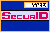

 Receiving a
System-Generated PIN with SoftID
If
your administrator has instructed you to receive a
system-generated PIN:
- Clear all PIN entries from your
SoftID by pressing the Clear button. The
display will clear and a new tokencode will show.
- Initiate a login session. After you
respond to the usual prompt for your login, the system
will prompt you to enter a PASSCODE.
- If your SoftID previously
had a PIN and the administrator did not clear it
when setting New PIN mode, enter the old PIN into
the SoftID and press Enter. In
the Enter PASSCODE field, type the
code that displays in the card.
- If you have never received
a PIN before, type the code that is currently
displaying in the SoftID into the Enter
PASSCODE field.
- Click Send. If you have
entered the code incorrectly, the system will display the
SecurID authentication prompt.
- Try authenticating again.
- Once you have entered a valid
tokencode, the New PIN dialog box will display.
- Click the System Generated PIN
button.
- A system-generated PIN is displayed
for 10 seconds.
- Wait for the next tokencode, and
then follow the instructions in SecurID
Authentication.